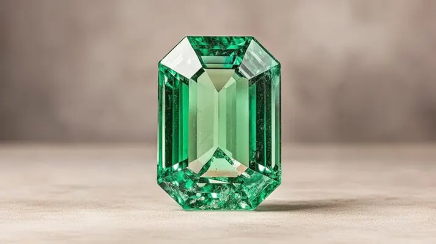

鉻致色與釩致色：祖母綠為什麼是綠的
祖母綠的綠不是一種綠——鉻的綠豔、釩的綠偏藍，元素週期表上的兩個格子，寫出了綠色的兩套劇本。

核心定義
祖母綠的綠色，主要來自兩種「著色劑」：鉻（chromium，Cr³⁺）與釩（vanadium，V³⁺）。它們取代綠柱石晶格中的鋁離子後，吸收特定波長的光，讓寶石呈現綠色。鉻與釩的比例不同，祖母綠的綠就不同——鉻主「豔」，釩主「藍」。
嚴格說，「祖母綠」的定義就綁定在這些致色元素上：只有含鉻或釩、呈現濃豔綠色的綠柱石才叫祖母綠；不含鉻釩的綠色（如鐵致色的淺綠綠柱石）只能叫「綠色綠柱石」，不能掛祖母綠之名。
特徵與分類
| 致色元素 | 顏色傾向 | 典型產地 |
|---|---|---|
| 鉻（Cr）為主 | 豔綠、純綠 | 哥倫比亞木佐 |
| 釩（V）為主 | 偏藍綠、明亮 | 巴西部分礦區 |
| 鉻＋釩混合 | 綠中帶藍綠 | 多地 |
| 鐵（Fe）為主 | 淺綠（非祖母綠） | 綠色綠柱石 |
鉻致色的祖母綠紅段吸收強烈，在濾色鏡（Chelsea filter）下呈紅色——這是祖母綠的經典測試；釩致色則反應較弱。簡單說，鉻讓綠「濃」，釩讓綠「亮藍」，兩者調和的綠最受市場歡迎。
科學原理
鉻離子在晶格中吸收黃綠與藍紫段光，穿透紅與綠段——所以祖母綠在濾色鏡下偏紅、肉眼看是綠。釩離子的吸收譜與鉻相似但更偏藍，產生的綠帶藍調。兩者的含量與比例，是「綠的配方」。
這也解釋了產地差異：哥倫比亞祖母綠鉻含量高（純豔綠），巴西部分礦區釩為主（藍綠），贊比亞則鐵含量高（深綠帶藍灰）。元素週期表，就是祖母綠的調色盤。
鑑定與鑑別方法
- 濾色鏡（Chelsea filter）：鉻致色祖母綠變紅
- 分光鏡看鉻/釩吸收譜線
- 對照產地：鉻主哥倫比亞、釩主巴西
- 排除染色：染色綠石英在濾色鏡下反應不同
- 實驗室光譜確認致色元素與產地
市場行情與保養建議
市場上，鉻致色的「純豔綠」最受追捧（哥倫比亞木佐綠是標竿）；釩致色的藍綠則見仁見智——有人愛它的明亮，有人嫌它不夠「正宗綠」。價格上，濃豔純綠通常高於偏藍綠。
選購提醒：祖母綠的「綠」要放在標準光源下看，珠寶店黃燈會讓綠偏暖、掩蓋色調問題——看綠，一定要在自然光與白光下。
常見誤區
只有含鉻/釩、顏色濃豔的綠柱石才叫祖母綠。淺綠綠柱石、綠色的其他寶石都不是——「祖母綠」三個字，是嚴格的學術與商業定義。
頂級祖母綠常帶恰到好處的藍綠底調（blue-green），被行家視為高級色；純黃綠反而普通。藍綠不是瑕疵，是品味的分界線。
冷知識
鉻致色的祖母綠在紅/綠濾色鏡下會呈現紅色——這是寶石學的經典快篩，也是「祖母綠為什麼綠」的視覺證據。
釩讓藍寶石變色（藍↔紫）、讓祖母綠偏藍綠——同一種元素，在兩種寶石裡寫出不同的顏色故事。
反直覺觀點
鉻讓祖母綠同時吸收黃綠與藍紫、穿透紅與綠——它的綠是「紅綠混合的視覺平衡」。濾色鏡下的紅，就是那抹看不見的紅。
過深的綠會發黑發悶。頂級祖母綠是「濃而亮」——色調與亮度平衡，比「純綠」更重要。綠的極致，是光與色的和諧。